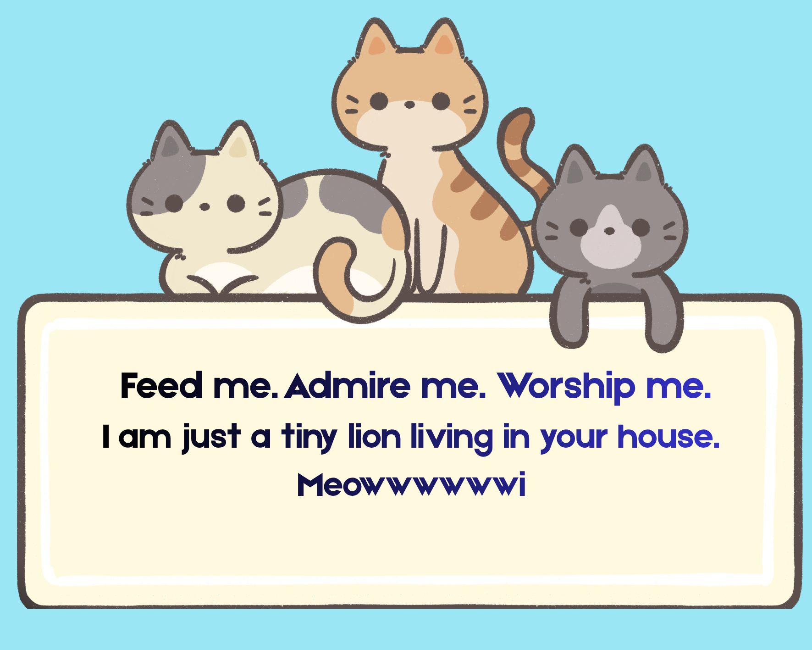

The cat (Felis catus), also called domestic cat and house cat, is a small domesticated carnivorous mammal. It is an obligate carnivore, requiring a predominantly meat-based diet.
Its retractable claws are adapted to killing small prey species such as mice and rats. It has strong, flexible body, quick reflexes and sharp teeth, and its night vission and sense of smell are well developed. It is a social species, but a solitary hunter and a crepuscular predator.
Cat communication includes meowing, purring, trilling, hissing, growling, grunting, and body language. It can hear sounds too faint or too high in frequency for human ears, such as those made by small mammals. It secreates and percieves pheromones.
Cat intelligence is evident in its ability to adapt, learrn through observation, and solve problems. Female domestic cats can have kittens from spring to late autumn in temperate zones throughout the year in equitorial regions,with litter sizes often ranging from two to five kittens.
A male cat is called a tom, tommy or tomcat or a gib if neutered. A female is called a queen or sometimes a molly if spayed. Some sources write that queen reffers solely to unspayed cats that are in an estrous cycle.
A juvenile cat is referred to as a kitten (shortened to kitty in British English), a term interchangeable with the now-obsolete word catling in Early Modern English. A group of cats can be referred to as a clowder, a glaring, or a colony.
|
|
 |
| Kingdom | Phylum | Class | Infraclass | Order | Family | Genus | Species |
|---|---|---|---|---|---|---|---|
| Animalia | Chordata | Mammalia | Placentalia | Carnivora | Felidae | Felis | Felis catus |